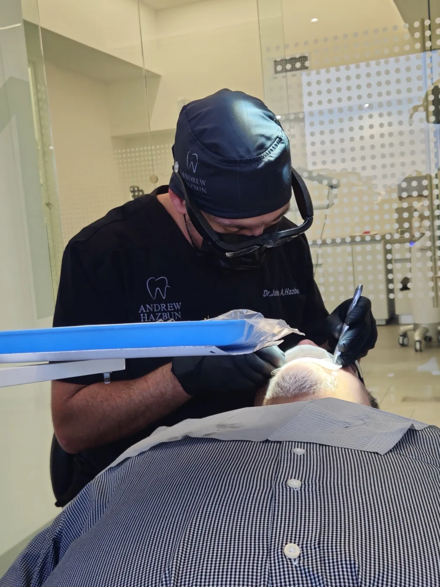

La periodoncia se ocupa de lo que sostiene al diente: la encía y el hueso. Es la base sobre la que se apoya todo lo demás.

Un diente sano no se sostiene solo: lo sujetan la encía, el ligamento y el hueso que lo rodea. Cuando ese soporte se deteriora, la pieza puede estar intacta y aun así aflojarse.
El proceso tiene dos fases con pronósticos muy distintos. En la gingivitis la inflamación está limitada a la encía, y controlando la placa suele recuperarse por completo. En la periodontitis la inflamación ya alcanzó el hueso de soporte, y esa pérdida no se recupera.
Esa es la razón de consultar temprano: la diferencia entre las dos fases no está en el dolor, que muchas veces no aparece, sino en cuánto tiempo lleva la inflamación instalada.
La enfermedad de las encías avanza de forma silenciosa con más frecuencia de lo que se cree, y por eso se detecta tarde.
Encías que sangran al cepillar o con el hilo. Encías enrojecidas, hinchadas o sensibles. Mal aliento que vuelve poco después de cepillarse. Dientes que se ven más largos porque la encía se retrajo. Sensibilidad en el cuello del diente. Piezas que se sienten flojas o que cambiaron de posición. Cualquiera de ellas es motivo de revisión.
El tratamiento base se llama raspado y alisado radicular. Consiste en retirar el cálculo y la placa que quedaron bajo el borde de la encía, sobre la superficie de la raíz, y dejar esa superficie lisa para que el tejido pueda volver a adherirse.
Se hace por zonas y con anestesia local cuando corresponde. Según la severidad, el periodoncista que lleve su caso valora si hace falta un abordaje adicional.
La parte que decide el resultado no ocurre en el sillón: es el control diario de la placa en casa y el cumplimiento de las citas de mantenimiento. Sin eso, el cálculo vuelve a formarse en los mismos sitios.

La salud periodontal es un requisito previo, no un añadido opcional, para casi todo lo demás.
Un implante necesita hueso sano donde integrarse, y la enfermedad periodontal es precisamente lo que lo destruye. Una rehabilitación apoyada sobre dientes con soporte comprometido tiene los días contados. Por eso el plan de cualquier tratamiento amplio empieza por aquí.
No lo es. Una encía sana no suele sangrar al cepillado ni al hilo, aunque el sangrado se haya vuelto algo cotidiano. Casi siempre indica inflamación por placa acumulada, y en esa fase temprana suele revertirse. Conviene revisarlo en lugar de esperar.
El hueso de soporte que ya se perdió no se recupera con el tratamiento. Lo que sí se logra, y es el objetivo, es detener el avance y mantener la enfermedad controlada en el tiempo, con tratamiento y con un esquema de mantenimiento. Por eso importa tanto detectarla temprano.
Se realiza con anestesia local cuando el caso lo requiere, y la experiencia varía de una persona a otra. Es frecuente notar sensibilidad al frío durante los días siguientes, porque la superficie de la raíz queda expuesta al retirar el cálculo que la cubría.
La limpieza dental trabaja sobre la parte visible del diente y el borde de la encía, con fines preventivos. El raspado y alisado radicular llega por debajo de la encía, sobre la superficie de la raíz, y es un tratamiento para una enfermedad ya diagnosticada.
Los intervalos suelen ser más cortos que los de un control preventivo habitual, porque el objetivo es que la enfermedad no vuelva a activarse. El esquema concreto lo indica el profesional según la severidad que tuvo su caso y cómo responde.
Primero hay que controlarla. Un implante se integra al hueso, y la enfermedad periodontal activa compromete precisamente ese hueso. Estabilizada la encía y con un mantenimiento constante, la colocación puede valorarse.
Depende de cuántas zonas estén afectadas y de la severidad, que se determinan al medir el estado de la encía. El costo de su caso se le explica en la consulta de valoración.
Las dudas que no aparezcan aquí se resuelven en la consulta de valoración.
Escríbanos por WhatsApp y con gusto le orientamos sobre el tratamiento ideal para usted.
Lunes a viernes de 9:00 a.m. a 6:00 p.m. Sábados con cita previa. Design Center, Torre 1, Nivel 9, Oficina 909, Zona 10.